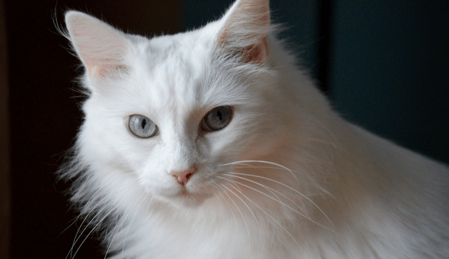
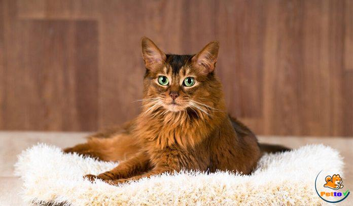

>> Cẩm nang chăm sóc MÈO
Mèo Mướp (mèo vằn/mèo lông sọc) không hẳn là giống mèo riêng biệt mà đây chỉ là cách
gọi để phân biệt mèo dựa theo màu lông. Nghĩa là bất cứ chú mèo nào sở hữu bộ lông sọc vằn đều có thể được xem
như mèo mướp. Do đó, mọi người cho rằng mèo mướp giống như “phiên bản thu nhỏ” của con hổ nên thường gọi chúng
là “tiểu hổ”.
Vì thế, hiện nay, lịch sử cụ thể của giống mèo này vẫn còn là “một dấu chấm hỏi”. Đa phần mọi người chỉ biết
rằng đây là loài mèo hoang do tội nghiệp nên đã được đem về nuôi, dần dần thuần hóa thành mèo nhà.
Mèo Vàng được phân chia vào nhóm mèo nhà để phân biệt với các giống mèo
thuần chủng. Dĩ nhiên nó không phải là một giống mèo thuần chủng. Nguồn gốc giống mèo Vàng xuất
hiện từ rất lâu, người ta cũng không rõ nó có mặt từ bao giờ, chỉ biết nó là vật nuôi có ích
trong nhà của nhiều khu vực quốc gia châu Á.
Nó giúp chủ nhà bắt chuột và ăn, ở, sinh sống trong nhà người dân, làm bạn với họ. Nhưng có
nhiều người lại tin rằng tổ tiên trung gian gần nhất trước khi chúng được thuần hóa thì chúng mang
trong mình dòng máu là loài mèo rừng châu Phi. Điều đặc biệt giống mèo Vàng này sở hữu nguồn
gen rất đa dạng, chính vì vậy chúng ít bị mắc các bệnh về di truyền.
>> Cẩm nang chăm sóc MÈO
Mèo Xiêm là một trong những loài mèo đầu tiên của mèo lông ngắn phương Đông được công
nhận. Mèo Xiêm có thân hình tương đối mảnh mai và dáng đi duyên dáng. Điều này khiến chúng khác biệt hoàn toàn
so với những con mèo béo hoặc chân ngắn khác. Chúng có đầu dài, xương mỏng và nhỏ. Có nhiều đường thẳng đi từ
tai đến miệng, miệng nhỏ và nhọn ở phía dưới, tai lớn và gốc tai rộng. Ngoài ra, loài này còn có một chiếc đuôi
rất mỏng và dài, thon dần về phía cuối.
>> Cẩm nang chăm sóc MÈO
Mèo Ba Tư có nguồn gốc từ Ba Tư (Iran). Chúng được yêu thích bởi dáng vẻ nhỏ nhắn, xinh
xắn, sở hữu bộ lông dài, dày và mượt mà. Vì thế nên trông chúng lúc nào cũng mũm mĩm và đáng yêu. Bộ lông mèo
thường có nhiều màu, trong đó, phổ biến là màu xám khói, xám xanh hoặc trắng đen. Phần đầu mèo khá to, với đôi
mắt lớn, tròn, mũi tẹt. Tai có hình tam giác nhỏ, tạo nên vẻ độc đáo và khí chất riêng cho bé mèo Ba Tư.
Mèo Ba Tư thường rất hiền lành, thân thiện, trầm tĩnh và rất dễ thích nghi. Chúng có thể trở thành ở trong nhà
cả ngày dài mà không thấy phiền chán hay buồn tẻ.
>> Cẩm nang chăm sóc MÈO
Mèo Anh lông ngắn (British Shorthair) thuộc một trong các giống mèo cổ nhất
trên thế giới với nguồn gốc từ Ai Cập trong thời kì La Mã cổ đại. Chúng được người Anh rất yêu
thích chính bởi khoảng thời gian La Mã xâm chiếm hòn đảo Anh từ những thời xa xưa, dẫn tới giờ
đây, giống mèo này gần như gắn liền với Vương Quốc Anh xinh đẹp.
Sở dĩ gắn liền là bởi, sau khi được mang tới Anh, chúng trở nên thích nghi với môi trường sống nơi
đây và phát triển, sinh sôi, thường rất được yêu thích bởi các gia đình thuộc dòng dõi quý tộc.
>> Cẩm nang chăm sóc MÈO

Mèo Anh lông dài hay British Longhair có nguồn gốc từ Anh quốc, chúng là hậu duệ của
giống mèo Ba Tư và mèo Anh lông ngắn. Vào đầu thế kỷ 20, mèo Anh lông ngắn đứng trước nguy cơ tuyệt chủng. Vậy
nên người ta đã đem lai tạo những cá thể mèo anh lông ngắn còn lại với mèo ba tư, hình thành lên cá thể mèo anh
lông dài.
Giống mèo này được tạo ra bởi sự đột biến gen trong quá trình lai tạo mang những đặc điểm giống với mèo anh lông
ngắn chỉ khác ở bộ lông. Nói một cách ngắn gọn, mèo anh lông dài là phiên bản khác của mèo anh lông ngắn.
>> Cẩm nang chăm sóc MÈO

Mèo Angora Thổ Nhĩ Kỳ đây là một giống mèo nhà có nguồn gốc từ vùng Ankara của Thổ Nhĩ
Kỳ. Là một chú mèo có ngoại hình sang trọng nhưng chú mèo này rất năng động. Chúng thích chơi đùa, chạy nhảy, có
thể nghịch bóng hay cuộn len cả ngày mà không thấy chán ở đài phun nước. Cơ thể của mèo Angora Thổ Nhĩ Kỳ dài,
hơi mỏng
manh và rất linh hoạt do khung xương nhỏ. Ankara có một bộ lông dài và mượt mà, trông cô nàng mèo như một tiểu
thư vô cùng sang trọng và quý phái. Màu lông phổ biến nhất ở Ankara là màu trắng, nhưng có một số màu khác như
sọc, trắng nhạt, đen hoặc nhiều màu khác nhau.
Do mèo Angora có trí thông minh bẩm sinh nên bạn sẽ không khó để huấn luyện nó nghe lời bạn. Chúng là những con
mèo thích giao tiếp, rất ngoan ngoãn và dễ nghe lời. Chúng luôn hòa đồng và thân thiện với mọi người, đặc biệt
là trẻ em hoặc các vật nuôi khác.
>> Cẩm nang chăm sóc MÈO
Mèo tai cụp Scotland có vẻ ngoài vô cùng dễ thương, thân hình mũm mĩm, cái đầu to tròn.
Điểm đáng yêu nhất ở chú mèo này chính là đôi mắt to long lanh, nhiều màu sắc đa dạng như xanh đen, xanh xám,
xanh dương, khói... và tất nhiên không thể thiếu đặc điểm nhận dạng là chiếc tai cụp xinh xắn. Lông và đuôi của
Scottish Fold có hai
loại là lông ngắn và lông dài, đuôi dài, to, xù như bông lau. Mèo tai cụp mang một số màu lông phổ biến như màu
sliver, xám, xám xanh, lilac... Không chỉ có vẻ ngoài đẹp, tính cách chú mèo này vô cùng hiền lành, thân thiện,
bình tĩnh, hoà đồng với những loài vật khác. Tuy nhiên, nó cũng có một nhược điểm là lười vận động nên dễ béo
phì.
>> Cẩm nang chăm sóc MÈO

Giống mèo Somali
có nguồn gốc từ Ai Cập, nơi một con mèo Abyssinian bị đột biến lông dài. Do đó, nó nhận được sự quan tâm của
người dân và các
nhà nuôi giống. Mèo Somali có vóc dáng khỏe khoắn, vạm vỡ, thân hình đầy đặn với những cơ bắp chắc khoẻ, chiếc
cổ to. Đầu nó có mũi nhọn và khuôn mặt rộng. Bộ lông trông rất mượt mà, màu lông thường thấy của chúng là xám,
nâu nhạt và màu me, đôi mắt xanh đồng tròn xoe của mèo Somali đủ sức hút hồn bất cứ ai yêu thích giống mèo này.
Chúng ngủ rất nhiều, những lúc thức thường theo dõi người và các hoạt động trong nhà từ xa.
>> Cẩm nang chăm sóc MÈO
Mèo Maine Coon
còn có tên gọi khác là mèo lông dài Bắc Mỹ, mèo Maine Coon là một giống mèo nòi tự nhiên cổ xưa nhất Bắc Mỹ.
Chúng sở hữu kích thước lớn hơn những giống mèo khác trên thế giới. Một chú mèo Maine Coon trưởng thành có thể
nặng tới 11kg và chiều dài cơ thể lên tới 1,3m. Cơ thể của những chú mèo này còn to lớn hơn bởi chúng sở hữu
những bộ lông khá dài, bồng bềnh và có nhiều màu khác nhau. Dù có bản năng săn mồi cực nhạy bén nhưng đây lại là
loài mèo cực kỳ hiền lành và thông minh.
>> Cẩm nang chăm sóc MÈO